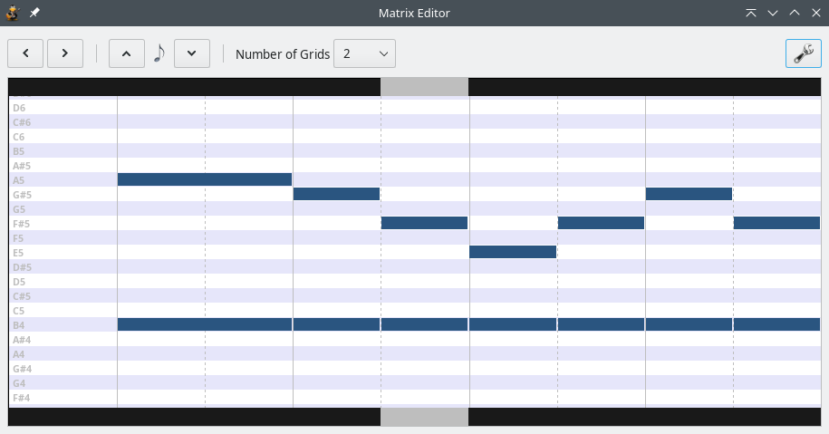

|
Matrix EditorThe Matrix Editor is a useful tool for editing the percussion tracks. It can also edit the ordinary tracks, but it is much less useful. It is accessed by the View → Show Matrix menu. Basically, it divides the current measure into segments and displays the possible percussion sounds. Not only you can view the measure and the sounds in the matrix, but by clicking on one block of the matrix you add/remove the sound from the tab.  It is very important to remember that Matrix Editor does not "lock" the main TuxGuitar window, which means you can use note Duration and Dynamics icons from the toolbar and change the current measure/instrument as well. You can also change the current measure with left/right arrows in the top-left corner of the dialog, and the note duration by the note duration up/down arrows (between the arrows is current note duration). The Number of Grids value in the dialog helps you to determine the position where you should click - it divides one basic duration (denominator of Time Signature) into number segments. The borders on the top and the bottom of the Matrix Editor (the black stripes on the picture above) marks your current cursor position - which does not affect your clicking, only writing the numbers in the tab. The settings icon on the top-right corner of the dialog opens the settings for the Matrix Editor. There you can adjust colors and font of the Matrix Editor dialog. |